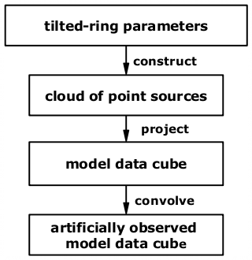

|  | |
| Fig. 1: TiRiFiC model construction | |
The flow diagram (Fig. 1) to the right shows the basic strategy followed by TiRiFiC to construct a simulated observation. The model generation is very similar to the one of the GIPSY routine galmod, we refer to the description of this task for additional information. We will point out the differences to this task.
| Contents: |
| Fig. 2: TiRiFiC parametrisation. The user specifies parameters at (user-specified) radii (dots), thus providing parameter nodes. The actual model consists of sub-rings (vertical lines) with a user-specified width with parameter values resulting from a linear interpolation between the nodes ("rings"). | |
A TiRiFiC tilted-ring-model is specified by a set of parameters at user-specified radii (Fig. 2) plus a set of global parameters. Hence, the number of parameters belonging to the model is the number of specified radii times the number of parameters that change with radius plus the parameters that are independent of radius. We call the set of parametes belonging to a given radius a "ring" to stick to traditional terminology, while it is more accurately called a set of nodes at a specific radius.
To calculate a model, a number of "sub-rings" with a width specified by the user is created by linearly interpolating the ring-specific parameters (Fig. 2). Within a subring all parameters stay constant. TiRiFiC hence produces a tilted-ring models with the actual rings being the generated sub-rings, not the nodes. With the choice of the sub-ring width the user specifies the accuracy with which a real interpolation of the parameters between the rings (nodes) is reached. The reason for this approach is the higher computational efficiency that can be reached (the computation speed in increased). Each subring will then be modelled via Monte-Carlo integration: depending on the parameters given for the specific sub-ring (calculated via linear interpolation between the user-specified rings or nodes) a list of point sources is generated. The pointsources ("clouds" in galmod terminology) have equal total flux (for each disk, see "Model Parameters") and are distributed in Cartesian phase-space (with three orthogonal spatial and three orthogonal velocity coordinates) to reflect the given model determined by the model parameters. The result is a cloud of point sources of equal flux with a well determined position in Cartesian phase-space. Differing from galmod, TiRiFiC does not offer a choice for varying "cloud" fluxes.
In a next step the point-source cloud is gridded onto a data cube that is identical to the input data cube. Doing so, a linear approximation is used. It is assumed that the model coordinates scale proportionally to the pixel coordinates. Doing so, the projection simply consists of neglecting the third axis ("depth") in the spatial coordinates and the first two in velocity. This approach is valid only for more distant objects (see Corbelli et al. 2010 for a discussion) of small angular diameter. Again, the reason for this approach is to optimise the computing speed. Future implementations might offer a precise treatment of projection effects. Note that gridding represents a convolution (with a box function of the size of a pixel). However, the approach taken in the galmod description to take this (likely very small) effect into account is only an approximation and therefore deprecated.
Another effect that the user should take into account before using TiRiFiC is that with the given approach radiation transport is treated poorly and under the asssumption that the material is optically thin. Only then, the luminosity along the line-of-sight is the simple sum of the single sources of emission. There are two situations where this applies: i) optical thinness and ii) a structure where the material is distributed in small (optically thick) clouds (like molecular clouds in a first approximation).
Finally, the gridded pointsource cloud is "observed" by convolving the resulting data cube with an instrumental function. The user specifies a global 2d Gaussian beam and a global (Gaussian) velocity dispersion, which should incorporate (also) the instrumental line broadening. The final model data cube is hence the result of a 3d convolution of the gridded point source model with the combination of the instrumental function in space and velocity. Note that this method (again, speed is the issue) does not exactly reflect the observational process, since the gridding is done before the simulated observation is performed. Correctly, one would incorporate the convolution in the gridding process, which is but far too expensive. In the velocity direction, galmod as well as TiRiFiC offer a Monte-Carlo approach to mitigate the pixelisation effect (sub-cloud concept, see "Model Parameters"). TiRiFiC makes use of the FFTW library to perform a 3D convolution.
The computing time of TiRiFiC can be influenced by two parameters, the first (NCORES) determines the number of computing cores that TiRiFiC should use. This parameter is limited by the number of computing cores that are given as a maximum at compile time, a higher number specified results simply in the usage of that maximum number. TiRiFiC applies simple OpenMP directives, which lead to a considerable, but not optimal speed-up, not optimal meaning that the speed-up comes not close to a computing time that would result from dividing the computing time using one core by the number of cores.
The second parameter to control the computing speed is the intialisation method INIMODE for the convolution routines. They make use of the FFTW library, which in turn offers four different initialisation methods for their FFT routine. Here, INIMODE 0 means to use an ad-hoc best guess method, which requires no initialisation time, while with INIMODE 3, several FFTs are excessively tested, compared, and the fastest one is chosen. Values in-between indicate transition modes between the two extremes. Obviously, if one wants to fit data and if one expects a high number of models to be calculated, one chooses INIMODE 3, while if one wants to quickly generate one or a few models, the best choice is INIMODE 0.
Here, the basic input parameters shall be described, as mentioned in the text above.
| Name | Category | Unit | Description |
| INSET | I/O (required) | The name of the input data set |
Defines the input data cube, in the standalone version in FLEXIBLE IMAGE TRANSPORT SYSTEM (FITS) format, in the GIPSY versions in GIPSY format. WARNING: he extent of a pixel along axis 1 and axis 2 (Right Ascension and Declination) are assumed by TiRiFiC to be identical. If this is not (approximately) provided, TiRiFiC will deliver the wrong result. TiRiFiC requires a data cube whose first axis is Right Ascension, second axis is Declination, third axis either velocity or frequency. Further axes (like a stokes axis) are allowed only if their dimension is 1.
Example 1 (standalone): if you have the data set AURORA.fits, you would specify:
INSET= AURORA.fits
Example 2 (GIPSY): if you have the data set AURORA with the third axis being FELO (velocity, optical definition), and the fourth axis being STOKES, you would specify:
INSET= AURORA FELO STOKES
or
INSET= AURORA F S
Example 3 (GIPSY): if you have the data set ARORUA with the third axis being VELO (velocity, radio definition), and no fourth axis, you would specify:
INSET= ARORUA VELO
or
INSET= ARORUA V
Remarks (GIPSY): it may happen that GIPSY remarks upon a conflict with the format of the former input data set, if it has the same name, but a different format, and refuses to work. The solution to that is to rename the data set. There is a hidden history file somewhere, but I haven't found out about its name and location yet. Please switch to the standalone version.
| Name | Category | Unit | Description |
| BOX | I/O (required) | Parameter must be set in GIPSY version, but leave always empty. Ignore in standalone version |
This is a relic parameter from GIPSY that must be
specified together with INSET if you are running
the GIPSY version. Please
switch to the standalone version.
Running GIPSY, always specify:
BOX
| Name | Category | Unit | Description |
| BMAJ | Geometrical | arcsec | HPBW (Half Power Beam Width), major axis |
| BMIN | Geometrical | arcsec | HPBW (Half Power Beam Width), minor axis |
| BPA | Geometrical | degrees | Position angle of spatial part of instrumental fuction |
The parameter set specifies the spatial part of the observational function. The (syntesised) beam (or point spread function) is assumed to be a 2d Gaussian with the major axis Half-Power-Beam-Width (HPBW) BMAJ (in arcsec), the minor axis Half-Power-Beam-Width (HPBW) BMIN (in arcsec) and the position angle (measered anticlockwise from N over E) BPA (in degrees). The instrumentational function is represented by a convolution with a 3d Gaussian. The missing component along the third (velocity) axis is specified with the parameter CONDISP, the global velocity dispersion.
Example:
BMAJ=14
BMIN=8
BPA=30
specifies that after gridding, the data cube is convolved with 3d
Gaussian, the spatial component consisting of a Gaussian with a FWHM
(Full Width at Half Maximum) or HPBW (Half-Power-Beam-Width) of 14
arcsec in a direction tilted by 30 degrees (anticlockwise) from North
and in addition a perpendicular Gaussian with a FWHM (Full Width at
Half Maximum) or HPBW (Half-Power-Beam-Width) of 8 arcsec.
| Name | Category | Unit | Description |
| NCORES | Generic (required) | Number of computing cores | |
| INIMODE | Generic (required) | FFT initialisation mode, integer from 0-3, 3: slowest initialisation, 0: fastest initialisation |
NCORES defines the number of desired computing cores to use for the model generation (maximum is always determined by the limitations given by the computer architecture or the constraints defined at compile time). Using more computing cores leads to a speed-up, which is, however, not optimal (the computing time does not decrease inversely proportional to the number of cores). INIMODE is a number ranging from 0 to 3, defining the initialisation time for the FFT and convolution routines of TiRiFiC. 0 corresponds to the fastest initialisation, but might result in a non-optimal FFT strategy and slower model generation, while 3 corresponds to the slowest initialisation with the optimally chosen FFT strategy. For generating few models only, INIMODE 0 is the optimal choice, for generating many models INIMODE 3 might be better.
Example:
NCORES=14
INIMODE=3
Here, 14 cores are used and the longest and most meticulous initialisation for the convolution routines is used.
| Name | Category | Unit | Description |
| CONDISP | Geometrical (required) | km/s | Global velocity dispersion |
The parameter CONDISP specifies the observational function along the third (velocity) axis. After gridding, the data cube is convolved with a spatial function specified with the parameters BMAJ, BMIN, BPA and a (normalised) Gaussian const. eV2/(2σV2) with the dispersion CONDISP (σV) along the velocity axis. This dispersion does not necessarily need to represent only the instrumental line broadening σinstr., but it can also incorporate the intrinsic line broadening σgal. with σ2V = σ2instr.+σ2gal..
Example:
CONDISP= 5
determines that after gridding, the data cube is convolved with a Gaussian with a dispersion of 5 km/s in direction of the third axis (velocity). The spatial instrumental function is defined by the parameters BMAJ, BMIN, BPA.
| Name | Category | Unit | Description |
| RADSEP | Geometrical (required) | pixel in spatial direction | Separation of sub-rings |
| RADSEP_i | Geometrical (required) | pixel in spatial direction | Separation of sub-rings |
The TiRiFiC tilted-ring model consists of a number of sub-rings of width RADSEP, for which the tilted-ring parameters are kept constant (see Sub-rings and clouds). The unit of RADSEP is pixel in spatial direction. This relic from galmod might be corrected soon. The parameter is specified per disk. If more than one disk is modelled (see chapter Multiple disks), the sub-ring separation of each disk has to be specified with the parameter RADSEP_i, where i is the number of the disk. RADSEP has no default for the first disk. The default for following disks is RADSEP_i = RADSEP_i-1, RADSEP_2 = RADSEP .
Example:
RADSEP= 0.05
RADSEP_2= 0.05
RADSEP_3=
determines that the sub-rings of the first disk have a width and a separation of 0.05 pixels (in spatial direction), 0.05 pixels for disk 2, and 0.05 pixels for disk 3 (defaults to value for disk 2).
| Name | Category | Unit | Description |
| CFLUX | Geometrical (required) | km s-1 | Point source (total) flux |
| CFLUX_i | Geometrical (required) | km s-1 | Point source (total) flux |
The TiRiFiC tilted-ring model consists of a number of sub-rings for which the tilted-ring parameters are kept constant. These are constructed via Monte-Carlo distrubution of point sources, the TiRiFiC tilted-ring model finally being a cloud of point sources (which is then projected onto the input data cube and convolved by an instrumental function). With CFLUX, the user specifies the total flux of one point source of that cloud in Jy km s-1. The lower this number, the higher the number of point sources, the finer the model. If more than one disk is modelled (see chapter Multiple disks), the cloud total flux of each disk has to be specified with the parameter CFLUX_i (units: Jy km s-1), where i is the number of the disk. CFLUX has no default (for the first disk). The default for following ith disk is CFLUX_i = CFLUX_i-1, CFLUX_2 = CFLUX .
Example:
CFLUX= 1E-5
CFLUX_2= 1E-4
CFLUX_3=
determines that every cloud of the first disk has a total flux of 1E-5 Jy km s-1, all clouds of the second and third disk have a total flux of 1E-4 Jy km s-1.
Parameters described here
Name
Category
Unit
Description
BMAJ
Geometrical)
arcsec
HPBW (Half Power Beam Width), major axis
BMIN
Geometrical
arcsec
HPBW (Half Power Beam Width), minor axis
BOX
I/O (required)
Parameter must be set in GIPSY versions, but
leave always empty. Ignore for standalone version.
BPA
Geometrical
degrees
Position angle of spatial part of instrumental fuction
NCORES
Generic (required)
Number of computing cores
INIMODE
Generic (required)
FFT initialisation mode, integer from 0-3, 3: slowest initialisation, 0: fastest initialisation
CFLUX
Geometrical (required)
Jy km s-1
Point source (total) flux of first disk
CFLUX_i
Geometrical (required)
Jy km s-1
Point source (total) flux of ith disk
CONDISP
Geometrical (required)
km/s
Global velocity dispersion
INSET
I/O
The name of the input data set
RADSEP
Geometrical (required)
pixel in spatial direction
Separation of sub-rings of first disk
RADSEP_i
Geometrical (required)
pixel in spatial direction
Separation of sub-rings of ith disk